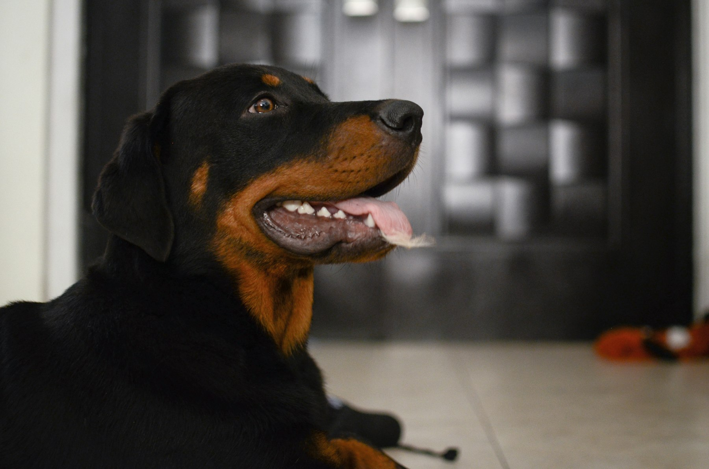
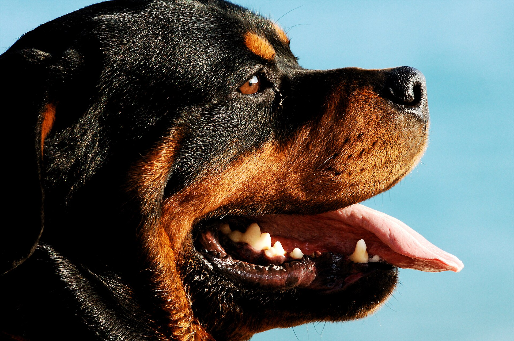
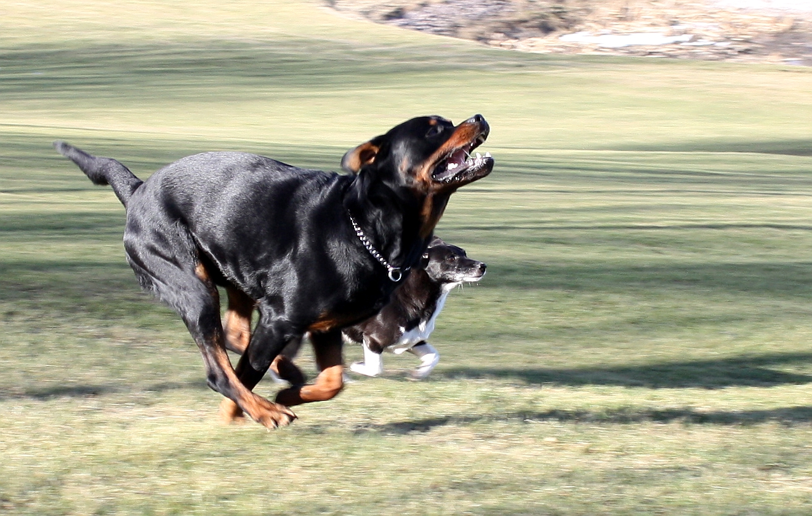
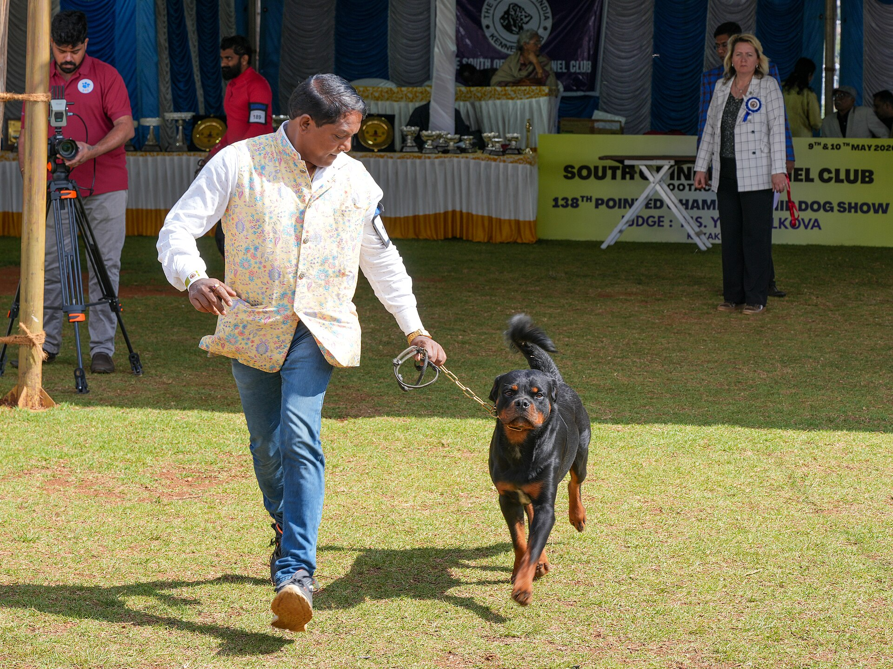
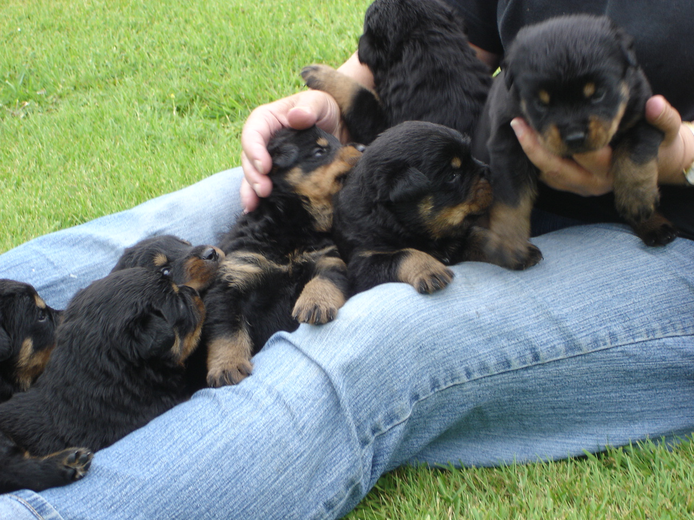
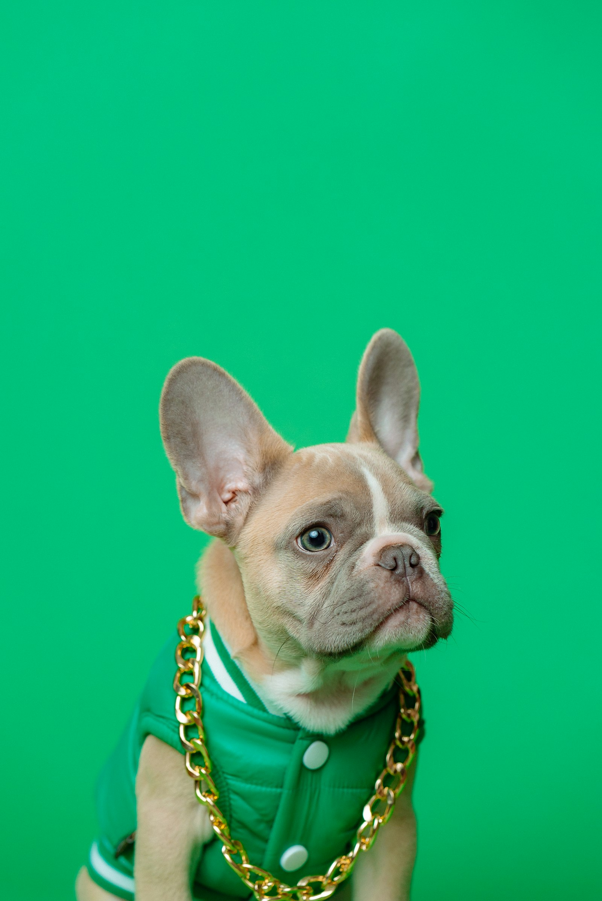
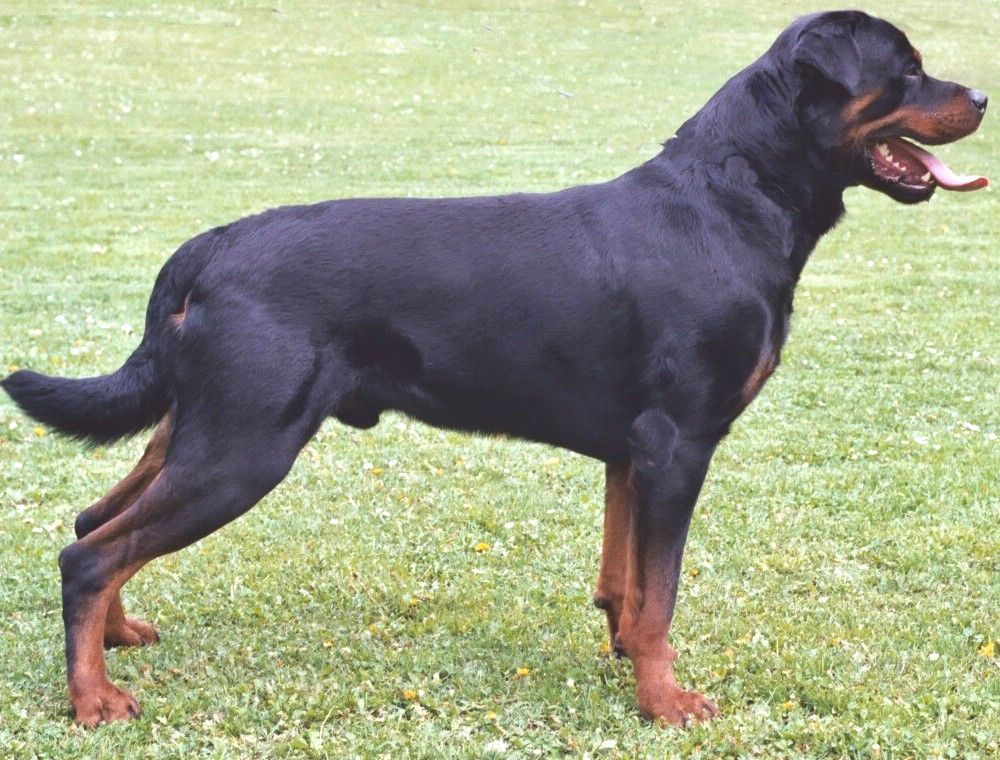

Want
- Documented German / ADRK-minded bloodlines
- Classic compact athletic build
- Confident, biddable family guardian
- Trainable for real obedience
- Natural guarding with an off-switch
- Public, verifiable health clearances

Before the giant heads, the short muzzles, and the odd commercial choices — a calm field guide to classic German type for a family guardian home.
01 — The assignment
Not “a Rottweiler.” The older idea of the dog — compact power, clean head, steady nerves, German selection pressure.
People have been breeding them too big and making strange cosmetic choices. That observation is not nostalgia for its own sake. It’s a type problem. The original dog was a drover and butcher’s dog from Rottweil: strong enough to work, athletic enough to last, serious enough to guard, steady enough to live with.
Your brief is clear. Family guardian and companion. Serious obedience. Pure German bloodlines when possible. Classic structure over novelty size. Base of operations: Baton Rouge — which means the deep bench is rarely local, and the right dog is worth travel.


02 — Type
ADRK and FCI still describe a working dog. Your eye should too.
Not a breed standard drawing — a reminder of posture. Classic stays mobile. Fashion gets heavy.
Males: roughly 24–27 in. ADRK often treats mid-60s cm as the correct large zone — not novelty giant.
| Piece | Target | Red flag |
|---|---|---|
| Male height | ~24–27 in / 61–68 cm. ADRK “correct large” often ~65–66 cm. | Sold as enormous novelty; bulk over structure. |
| Weight feel | Powerful and fit — often ~100–120 lb class when conditioned. | Regular 140–180 lb “guardian” marketing. |
| Movement | Effortless trot, clean reach and drive, no lumbering. | Only stacked glamour shots, never moving video. |
| Selection culture | ADRK / FCI / USRC-minded programs with real filters. | “German lines” with no papers and no tests. |



03 — Language
Titles and clearances are a map. Marketing adjectives are weather.
HD-A / HD-FreiGerman hips clear (best). US parallel: OFA Excellent / Good.
ED-0 / ED-FreiElbows clear. US: OFA Normal elbows.
JLPP N/NDNA clear. Also watch LEMP / NAD. Untested parents are a walk-away.
ZTPGerman breed suitability — structure, type, temperament, drive.
Zucht- u. KörfähigTop breeding clearance on the Ahnentafel.
BSTUSRC Breed Suitability Test — conformation + character elements.
BHBasic temperament and obedience bar. A real minimum signal.
IGP I–IIIReal sport titles. Fine on parents; III-only litters may be hotter than a house needs.
KS / V1Klubsieger = ADRK national specialty winner. V1 = Excellent, first in class.
AhnentafelOfficial ADRK pedigree. Often prints titles and health.
ADRKGerman parent club. Hardest ongoing filter on the breed’s home turf.
USRCUS club aligned with FCI/ADRK culture — events, BST, better referrals.
You’re not rejecting working blood. You’re rejecting sport-only intensity and commercial size drift.
04 — The shortlist
Ranked for your brief — Baton Rouge base, companion mind, classic German type — not “best kennel on earth.” Web diligence only. Adults before puppies. Verify every clearance yourself.

Limited litters, home-raised language, import-line story. Still confirm size and proportions on living adults — slogans can outrun structure.
Established European/German pedigree program with guardian positioning and lots of adult images. Copy leans substantial bone and powerful heads — only advance if live adults stay athletic.
Unusually transparent OFA/ADRK + JLPP posting, ADRK dam Hope vom Bierweg (KS-sired), French/ADRK Talya, clear pricing ($3k limited / $4k full). Strong if you’re still one to two years out.
05 — From Baton Rouge
Local Craigslist will not save you. Network, travel, and patience will.
One BST/show weekend trains the eye faster than fifty websites.
Serious German-type pups often land around $3k–$5k+. Pickup or flight nanny beats mystery shipping.
Save adult photos from Tier 1 programs. Build a private type board: side profile, front, moving. Prefer dogs that still look like athletes.
Hit a USRC weekend in DFW or Florida. Meet real dogs. Talk to handlers. Let your hands and eyes overrule websites.
Send the same letter to two or three programs. Demand clearance links and adult video. Compare answers, not just brochures.
US German-line puppy, young adult, or true DE import. Logistics from Baton Rouge are part of the decision, not an afterthought.
After conversation, papers, and type you actually like. Vague answers are a gift. Walk.
06 — Field checklist
Print it. Screenshot it. Use it every time.


07 — The letter
Copy it. Personalize the greeting. Keep the standards identical.
Subject: Family companion male — German-type Rottweiler (Baton Rouge) Hello, I’m in the Baton Rouge area and planning ahead for a male Rottweiler as a family guardian/companion. I will do serious obedience training. I am not looking for a high-drive sport-only prospect. What I want: • Documented German / ADRK-type bloodlines • Classic compact athletic build (original working type — not oversized modern pet type) • Stable, confident temperament for a home • Full health clearances on both parents (hips, elbows, JLPP) that I can verify Could you please share: 1) Current or upcoming litters and expected timing 2) Parent clearances (OFA links or German HD/ED + JLPP) 3) Adult photos/video of sire and dam (standing + moving) 4) Whether you place companion/family homes and how you match puppies 5) Pricing and visit/pickup expectations Thank you — happy to jump on a call if useful. Lance Faucheux Baton Rouge, LA
08 — Hard passes
| Skip | Why |
|---|---|
| LA / TX Facebook “giant German” litters | Usually the size/type drift you don’t want; papers thin. |
| “#1 USA / ship worldwide / deposit today” shops | Marketing machine over selection — even with import slogans. |
| No verifiable hips / elbows / JLPP | Non-negotiable on this breed. |
| Rare colors or long coat as a feature | Wrong breeding priorities. |
| Only AKC pet papers, zero Euro/working story | Different selection culture than original German type. |

09 — Desk references